사람용 웹은 AI에게 불편해요
웹사이트는 버튼, 입력창, 체크박스처럼 눈으로 보고 누르는 요소로 되어 있어요. 영상은 반대 상황을 상상해 봐요. 사이트에 들어갔더니 검은 화면에 명령어를 치라고 나오는 거예요. 이러면 대부분은 창을 닫아 버리겠죠. 그래서 웹은 특별한 지식 없이도 쓸 수 있게 만들어져 왔어요.
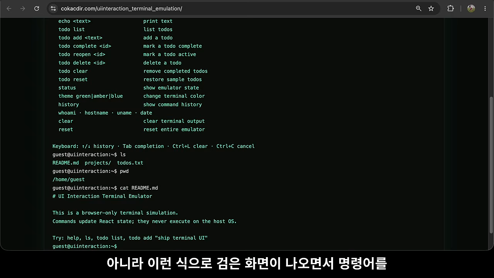
AI는 매번 화면을 분석해야 해요
이제 웹을 쓰는 주체에 AI 에이전트도 들어가요. 화면도 결국 코드라서 AI가 못 다루는 건 아니에요. 문제는 AI가 사이트에 올 때마다 페이지 구조를 분석하고, 그에 맞는 조작 코드를 직접 만들어야 한다는 점이에요. 사람용으로 만든 화면을 AI가 자기 편한 도구로 바꿔서 쓰는 셈이죠.
사이트마다 구현 방식과 복잡도가 달라요. 그래서 분석을 잘못하면 엉뚱한 버튼을 누르는 식으로 오작동할 수 있어요.
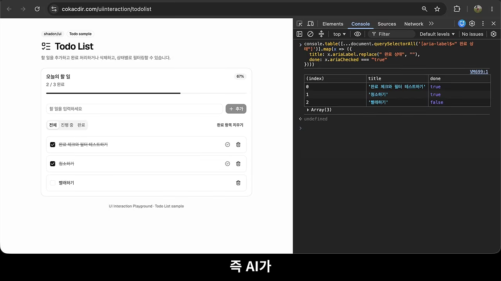
WebMCP가 해결하려는 것
WebMCP는 이 문제를 사이트 쪽에서 풀어요. 사람용으로 만든 사이트에 AI도 올 거라고 보고, AI가 쓰기 쉬운 조작 도구를 미리 준비해 두는 거예요. 그러면 AI는 사이트를 분석하거나 도구를 직접 만들 필요가 없어요. 사이트가 코드로 만들어 둔 도구를 그대로 꺼내 쓰면 돼요.
사이트에 득일까요?
영상은 사이트 입장에서 AI를 배려해 주는 게 꼭 좋은지도 짚어요.
| 사이트 유형 | WebMCP 지원이 | 이유 |
|---|---|---|
| 상품 판매·예약 서비스 | 득이 될 수 있어요 | AI가 사용자 대신 찾고 예약하고 구매할 때, AI를 놓치지 않는 창구가 돼요 |
| 방문·광고 노출이 수익원인 사이트 | 반갑지 않을 수 있어요 | 사용자가 직접 화면을 보고 눌러야 의미가 있어요 |
바이브 코딩으로 사이트를 만든다면 코딩 에이전트에게 WebMCP 지원을 붙여 달라고 하면 돼요. 그래도 원리는 알아 두는 게 좋다며 영상은 다음 내용으로 넘어가요.
웹 API 하나가 더 생긴 것
웹에는 이미지, 오디오, 입력 요소가 있고, 바이너리 코드를 돌리는 WebAssembly와 실시간 양방향 통신을 하는 WebSocket도 있어요. 모두 처음부터 있던 게 아니라 웹이 발전하면서 하나씩 생겼어요. 이런 기능을 웹 API라고 불러요. WebMCP는 이 목록에 하나가 더해진 거예요.
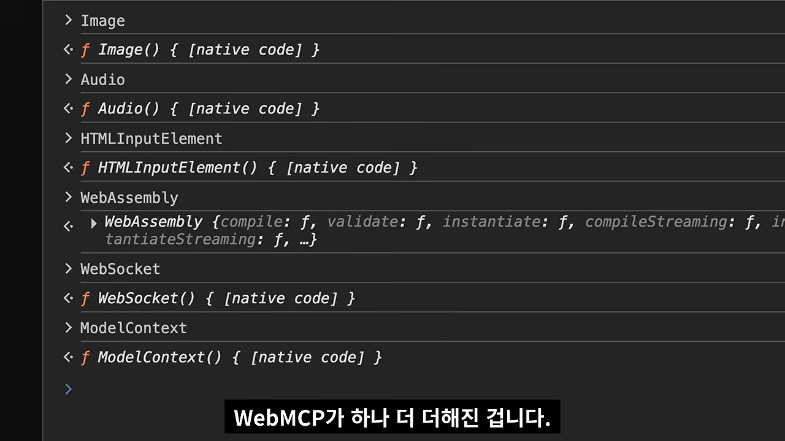
ModelContext가 있어요. WebMCP가 이 이름으로 브라우저에 들어와 있어요. 영상 03:19에서 보기이미지 API에 주소나 크기를 정하는 기능이 있듯이, ModelContext에는 AI용 도구를 등록하고 쓰게 하는 기능이 들어 있어요. 영상의 표현대로 꽤 단출해요.
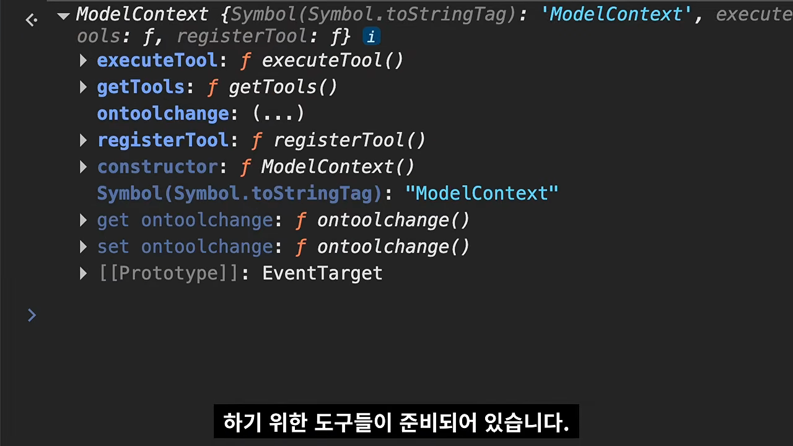
| 기능 | 누가 쓰나요 | 하는 일 |
|---|---|---|
registerTool | 사이트 | AI가 쓸 조작 도구를 등록해요 |
getTools | AI | 이 사이트에 등록된 도구와 설명을 확인해요 |
executeTool | AI | 고른 도구를 실행해요 |
플래그를 켜야 보여요
ModelContext는 기본으로 꺼져 있어요. 그래서 크롬의 chrome://flags에서 WebMCP for testing 플래그를 켜고 브라우저를 다시 시작해야 해요. 여기서 말하는 브라우저는 사람이 웹 서핑에 쓰는 것이 아니라 AI가 쓰는 브라우저예요. 설정 후 접속하면 콘솔에서 document.modelContext가 잡혀요.
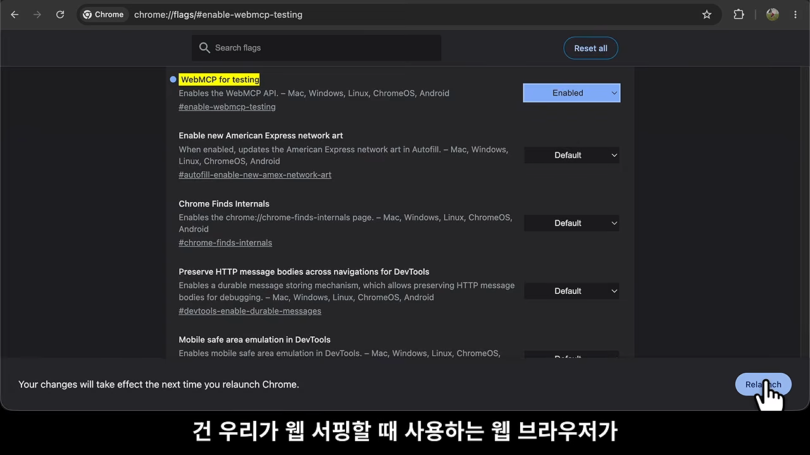
할 일 목록 사이트로 해 보는 데모
데모 사이트는 할 일 목록이에요. 이 사이트에서 AI용 도구라면 목록 조회, 추가, 완료 처리, 삭제 정도가 되겠죠.
사이트 쪽: registerTool로 등록해요
사이트는 각 동작을 하는 코드를 준비해서 registerTool로 등록해요. 도구 하나는 두 부분으로 나뉘어요.
- 도구 정보: 이름(
delete_todo), 사람이 읽을 제목, 설명, 그리고 어떤 입력을 받는지 적은 inputSchema예요. - 도구 코드 본체:
execute함수예요. 화면에서 해당 할 일의 삭제 버튼을 찾아 누르고, 성공 여부를 돌려줘요.
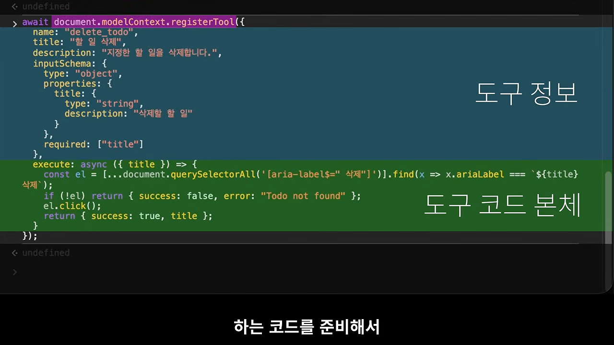
코딩 에이전트에게 "WebMCP 지원해 줘"라고 부탁하면, 에이전트가 사이트에 이런 등록 코드를 넣어 주는 거예요.
AI 쪽: getTools로 보고 executeTool로 실행해요
AI는 사이트에 들어오면 먼저 준비된 도구가 있는지 getTools로 확인해요. 도구마다 무슨 용도이고 어떻게 쓰는지 설명이 붙어 있어서, AI는 그걸 읽고 바로 쓸 수 있어요.
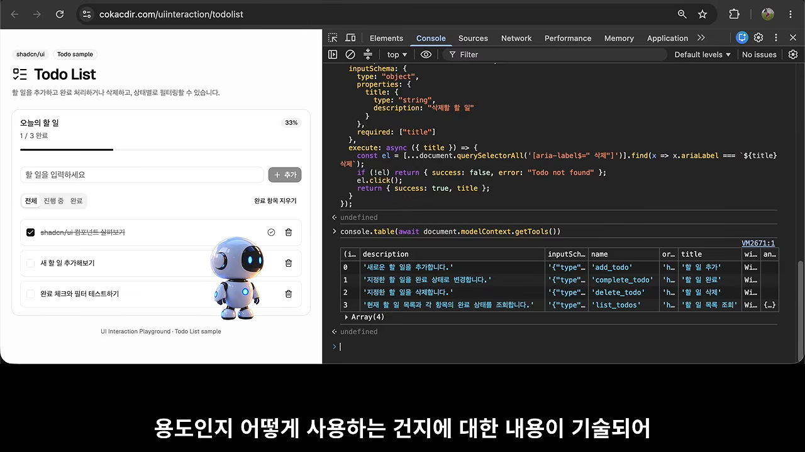
할 일 목록을 보고 싶으면 list_todos를 executeTool로 실행해요. 추가, 완료, 삭제도 같은 방식이에요. AI는 화면 구조를 몰라도 사이트가 내준 방법만으로 사이트를 다룰 수 있어요.
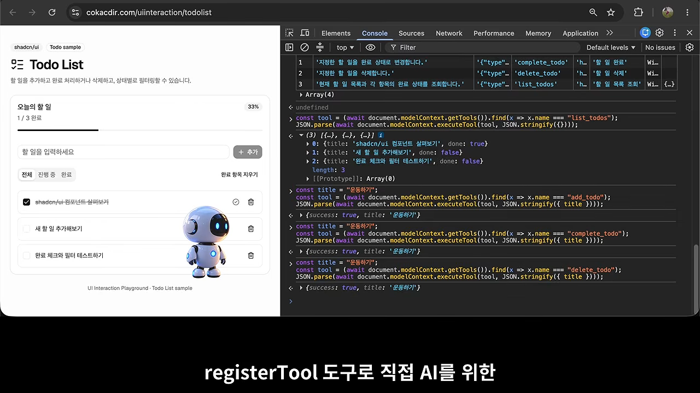
페이지가 열리면 자동으로 등록되게
여기까지는 콘솔에서 손으로 등록했어요. 실제로는 코딩 에이전트에게 "접속하면 도구가 미리 등록되어 있게 해 줘"라고 요청해서 사이트를 고치면 돼요. 고친 페이지에 들어가면 도구 네 개가 바로 등록되어 있어요.
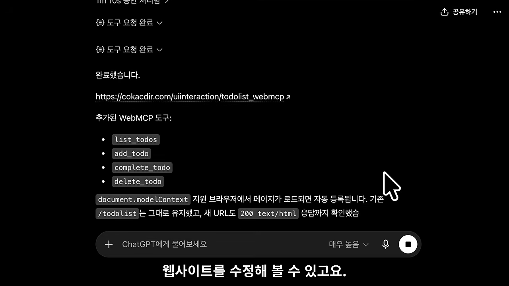
AI 에이전트 쪽 구현과 앞으로의 웹
앞에서 콘솔로 해 본 AI 에이전트 쪽 동작은 프로그램으로도 만들 수 있어요. 영상은 Playwright로 WebMCP를 켠 크롬을 띄우고, 사이트에 접속해 도구를 확인한 뒤 하나씩 실행하는 클라이언트를 보여 줘요.
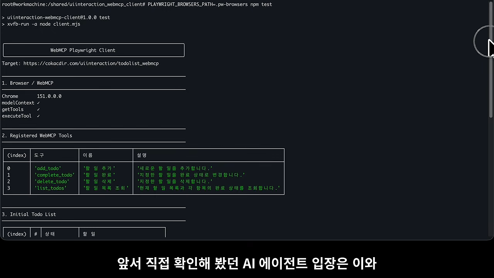
발표자가 보는 웹의 앞날
발표자는 결국 웹을 쓰는 주체는 AI 에이전트만 남을 수도 있다고 봐요. 그러면 프론트엔드는 필요 없고 백엔드의 API나 MCP만 남겠죠. 하지만 지금 웹이 당장 그렇게 바뀌는 건 불가능에 가까워요.
그래서 발표자는 WebMCP를 현실적인 타협으로 해석해요. 기존 웹은 그대로 쓰고, 프론트엔드 코드에 AI가 조작할 수 있는 인터페이스를 끼워 넣는 방식이라는 거예요.
스펙은 어디서 보나요
ModelContext API는 웹 API 문서가 보통 올라오는 MDN에서는 찾을 수 없어요. 지금은 Web Machine Learning 그룹의 GitHub 저장소에 스펙이 주로 올라오고, 내용도 활발히 바뀌고 있어요.
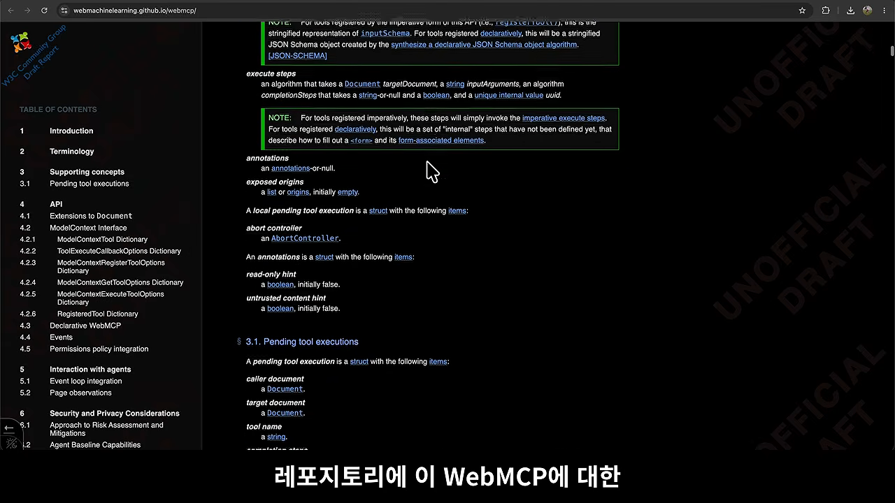